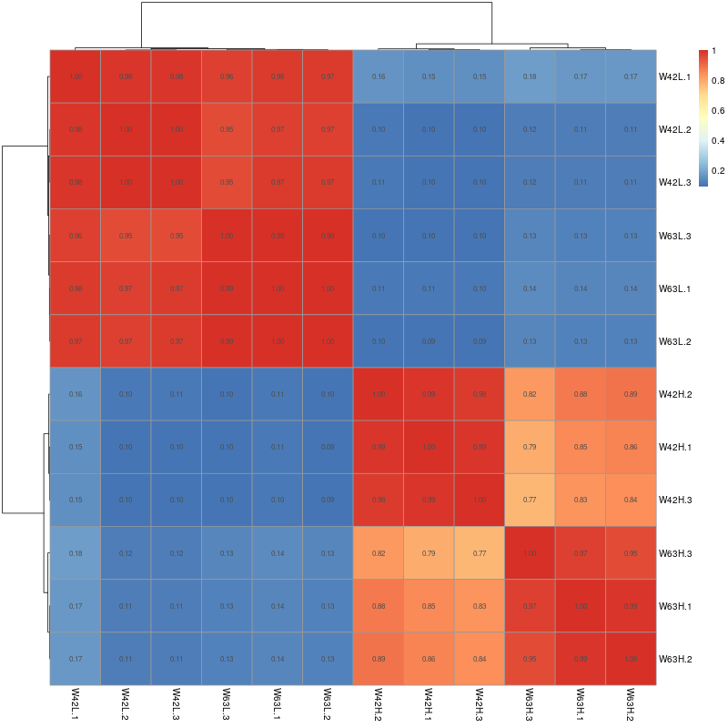

TreeviewCopyright © aleen42 all right reserved, powered by aleen42
3.1.3 样品相关性检验
样品间基因表达水平相关性是检验实验可靠性和样本选择是否合理的重要指标，在做差异表达分析之前，应先检查样品间基因的表达水平相关性。我们用皮尔逊相关系数表示样品间基因的表达水平相关性，相关系数越接近1，表明样品之间表达模式的相似度越高。一般来说，相关系数在0.8-1之间属于极强相关，如果生物学重复的样本之间相关系数低于0.8，表示样品之间的相关性较低，见图
